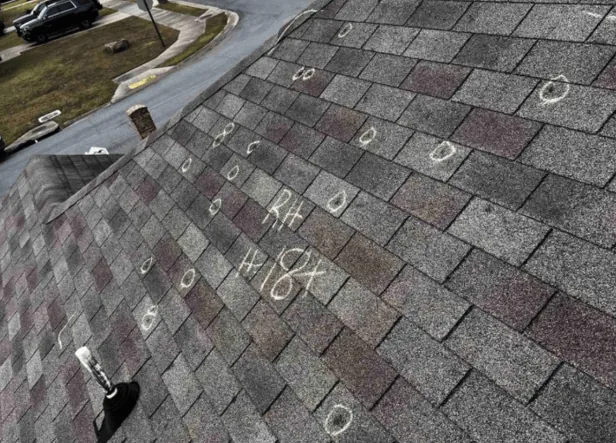
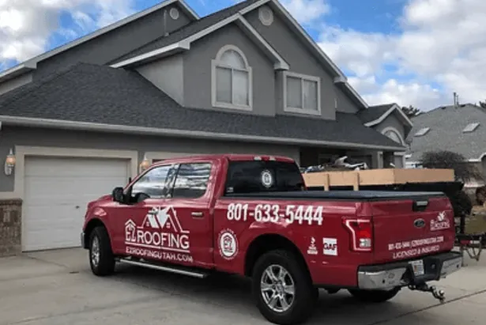

Winter is a season of joy and festivities. But it can also be a time of worry for homeowners.
Why?
The answer lies above your head. Your roof, the protective shield of your home, faces the brunt of winter weather.
Snow, ice, and freezing temperatures can wreak havoc on your roof. Minor issues can escalate into major problems, leading to major roof repairs.
But there’s a solution.
Scheduling a roof inspection before winter can prevent these headaches. A professional roofing contractor can spot potential issues, perform necessary shingle repairs, and ensure your residential roofing is ready to withstand the winter.
So, let’s delve into why a roof inspection before winter is essential for protecting your home.
The Risks of Winter to Your Roof
Winter weather poses numerous threats to the integrity of your roof. Snow accumulation adds considerable weight, which can compromise structural integrity.
Ice dams are another prevalent issue. They form when heat from your home melts snow, which then refreezes at the edges. This can lead to leaks and water damage inside your home.
Wind is also a concern. Winter storms bring strong winds that can lift and displace shingles. Damaged shingles expose your roof to moisture, potentially leading to rot and mold growth.
Understanding these risks underscores the importance of pre-winter roof inspections. It’s essential for safeguarding your home against winter’s harsh conditions.
Benefits of a Pre-Winter Roof Inspection
Scheduling a roof inspection before winter arrives offers many advantages. Identifying problems early can prevent significant issues and costly repairs later on. Taking proactive measures can ensure your home’s protection throughout the cold months.
Key benefits of a pre-winter roof inspection include:
- Spotting minor damages before they worsen
- Extending your roof’s lifespan with timely maintenance
- Preventing leaks and moisture infiltration
- Saving money on emergency repairs
- Enhancing Home Energy Efficiency
By planning ahead with a pre-winter inspection, homeowners can enjoy peace of mind. It’s a practical investment in home safety and longevity.
Identifying Minor Issues Before They Escalate

During a roof inspection, small issues often surface that could escalate into serious problems if ignored. Loose or missing shingles, minor leaks, and damaged flashing are common findings.
Addressing these minor concerns promptly can prevent substantial damage. Small repairs are more affordable compared to large-scale roof replacements. Proactive maintenance ensures your roof remains in top condition, safeguarding your home through harsh winter weather. Ignoring these issues now could lead to costly repairs later.
The Role of a Professional Roofing Contractor
Professional roofing contractors possess the expertise necessary to identify potential issues that untrained eyes might miss. Their years of experience allow them to assess your roof’s condition and recommend essential repairs.
Hiring a licensed and insured contractor ensures safety and quality. They provide a detailed inspection report, helping you make informed decisions about necessary repairs. They can also assist with insurance claims and offer warranties for their work. Trusting a professional leads to a more comprehensive and accurate inspection, giving you peace of mind before winter sets in.
Key Elements of a Roof Inspection
A comprehensive roof inspection covers many critical aspects. Experienced inspectors evaluate the roof’s overall health, checking all major and minor components. This thorough approach helps identify both visible and hidden issues.
Key elements typically assessed during a roof inspection include:
- Condition of shingles, checking for any that are loose, missing, or damaged
- Examination of flashing and seals for potential leaks
- Inspection of gutters and downspouts to ensure proper drainage
- Assessment of attic insulation and ventilation for heat and moisture control
- Checking for any signs of pest infestations or roof damage
By assessing these areas, inspectors ensure that any current issues are addressed before they evolve into costly repairs.
When to Schedule Your Roof Inspection
Timing is crucial for a roof inspection. Early fall is the optimal period to assess your roof’s condition. This timing allows for necessary repairs to be made before winter’s arrival.
Scheduling your inspection in early fall helps avoid harsh weather while ensuring issues are resolved quickly. It is important to act promptly, as roofing contractors may get booked fast during this season. A timely inspection gives you peace of mind before the winter months settle in.
Roof Maintenance Tips for Homeowners
Taking care of your roof is a vital part of home maintenance. Regular checks can prevent minor issues from becoming expensive repairs. Here are some practical roof maintenance tips for homeowners to ensure your roof stays in great shape:
- Inspect for loose or missing shingles.
- Keep gutters and downspouts free of debris.
- Trim tree branches near your roof.
- Ensure proper attic insulation and ventilation.
- Check for signs of leaks or water damage.
By following these simple tips, you can extend the life of your roof and maintain your home’s value. Regular maintenance also helps identify potential problems early, saving you money and stress.
The Cost-Effectiveness of Regular Roof Inspections
Investing in regular roof inspections is a wise financial decision. Early detection of issues reduces costly emergency repairs and prolongs your roof’s lifespan. Scheduling a roof inspection before winter can prevent severe weather from exacerbating minor problems.
Routine inspections are also beneficial for energy efficiency. Identifying and fixing leaks or insulation issues helps maintain consistent indoor temperatures, lowering heating and cooling expenses. Ultimately, regular roof inspections offer long-term savings and peace of mind.
Choosing the Right Roofing Company for Your Inspection

Selecting the ideal roofing company is vital for a thorough inspection. Seek professionals with a strong reputation and positive customer reviews. Check that the roofing contractor is licensed and insured to ensure credibility and safety.
Experience matters, so choose a roofing company familiar with your roof type and local climate conditions. Consider inquiring about their prior work with similar homes and asking for references. A reputable roofing company will provide clear communication and detailed inspection reports. Knowing your roof is in capable hands brings added assurance and trust.
Preparing Your Home for the Inspection
Before the roofing contractor arrives, take some simple steps to prepare your home. Clear any debris or items that may obstruct access to the roof. This makes the inspection process smoother and more efficient for the roofing company.
Ensure overhanging branches are trimmed, as they could pose a hazard. Providing easy access to your attic is also beneficial. A well-prepared home allows for a more thorough and efficient roof inspection, ensuring no details are overlooked.
Ensuring a Secure and Cozy Home for Winter
Scheduling a roof inspection before winter is a smart move for any homeowner. It ensures your home’s roof is ready to withstand harsh weather conditions. A secure roof translates to peace of mind and a cozy, protected home throughout the colder months. Prioritize this vital home maintenance task.
To schedule a free roof inspection, contact EZ Roofing today!